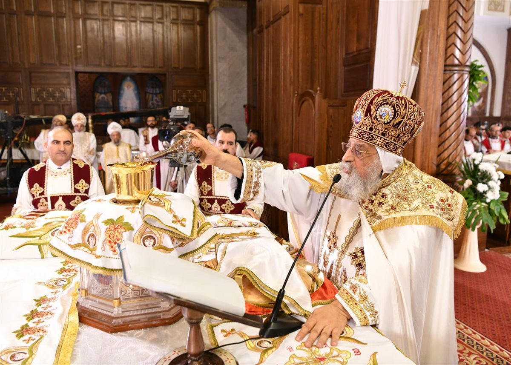
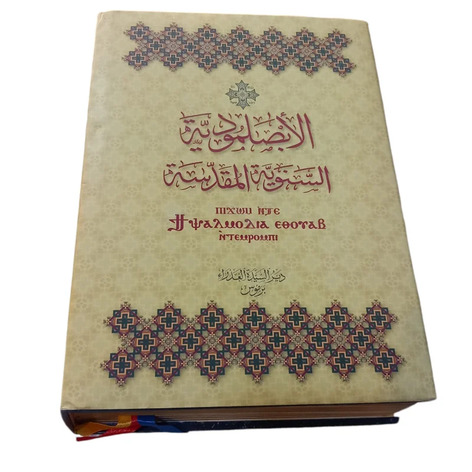

التوحيد
الكنيسة تؤمن بإله واحد، ضابط الكل، خالق السماء والأرض، وهذا الإيمان معلن بوضوح في قانون الإيمان والصلوات والتمجيدات.
موقع عربي كبير يشرح العقائد المسيحية الأساسية كما تظهر في الليتورجية القبطية، مع تقسيم واضح بين القداس والتسبحة، وتصميم حديث ومحتوى منظم وسهل القراءة.
العقيدة في الكنيسة ليست مجرد دراسة فكرية، بل هي إيمان حيّ يظهر في الصلاة والعبادة. لذلك فإن التثليث والتوحيد والتجسد والفداء لا تُفهم فقط من الكتب، بل أيضًا من نصوص الليتورجية نفسها.
الكنيسة تؤمن بإله واحد، ضابط الكل، خالق السماء والأرض، وهذا الإيمان معلن بوضوح في قانون الإيمان والصلوات والتمجيدات.
الإيمان المسيحي يعلن الآب والابن والروح القدس إلهًا واحدًا. والقداس والتسبحة مليئان بالتمجيد الثالوثي.
الابن الكلمة صار إنسانًا لأجل خلاصنا، وهذا يظهر بوضوح في قانون الإيمان والثيؤطوكيات والصلوات الخاصة بالأعياد السيدية.
المسيح قدم ذاته عنا، ومات وقام، والقداس يعلن هذا السر باستمرار من خلال الذبيحة والتناول وذكر الآلام والقيامة.
في صفحة القداس ستجد شرحًا تفصيليًا لمواضع ظهور العقائد داخل البنية الليتورجية: قانون الإيمان، صلاة الصلح، الأنافورا، استدعاء الروح القدس، القسمة، والتناول.

في صفحة التسبحة ستجد شرحًا موسعًا للثيؤطوكيات والذكصولوجيات والإبصاليات والهوسات، وكيف تحفظ الكنيسة العقيدة في التسبيح اليومي والسنوي.

اكتب كلمة مثل: التثليث، التجسد، الفداء، التوحيد
لأن كثيرين يدرسون العقيدة نظريًا دون أن يلاحظوا أن الليتورجية نفسها هي مصدر حي لفهم الإيمان. فالكنيسة تعلّم أبناءها من خلال النصوص التي تصليها يوميًا وأسبوعيًا وفي الأعياد والمواسم.
الليتورجية تحمل العقيدة بعمق، لأن الكنيسة تصلي ما تؤمن به وتؤمن بما تصليه.
لأنهما من أغنى المصادر الليتورجية التي تعلن العقيدة بوضوح وبصورة متكررة.
نعم، ويمكنك تطويره أكثر بإضافة مراجع ونصوص وآيات وصور وأقسام جديدة.